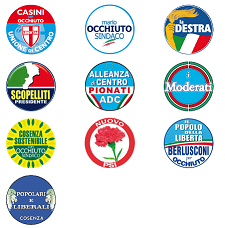

COMUNE DI COSENZA
(Servizio Elettorale)
BALLOTTAGGIO ELEZIONI AMMINISTRATIVE
DOMENICA 29 E LUNEDI' 30 MAGGIO 2011
(** Dati provvisori suscettibili a modifica e verifica superiore **)
| Mario OCCHIUTO | Enzo PAOLINI |
|  | |
| Voti - (-%) | Voti - (-%) |
Sezioni scrutinate 0 su 82
Informazioni: per visualizzare in dettaglio tutte le informazioni, relative al ballottaggio dei candidati alla carica di sindaco o ai risultati delle singole sezioni, è sufficiente fare clic sui links (mirrors) sotto riportati. Si consiglia di utilizzare un solo mirror per una corretta navigazione. Qualora il server non consentisse la connessione riprovare con il secondo mirror ed attendere qualche minuto affinchè le connessioni accodate siano evase.
|
Dettaglio Risultati x Sezione (Mirror 1) |
Dettaglio Risultati x Sezione (Mirror 2) |